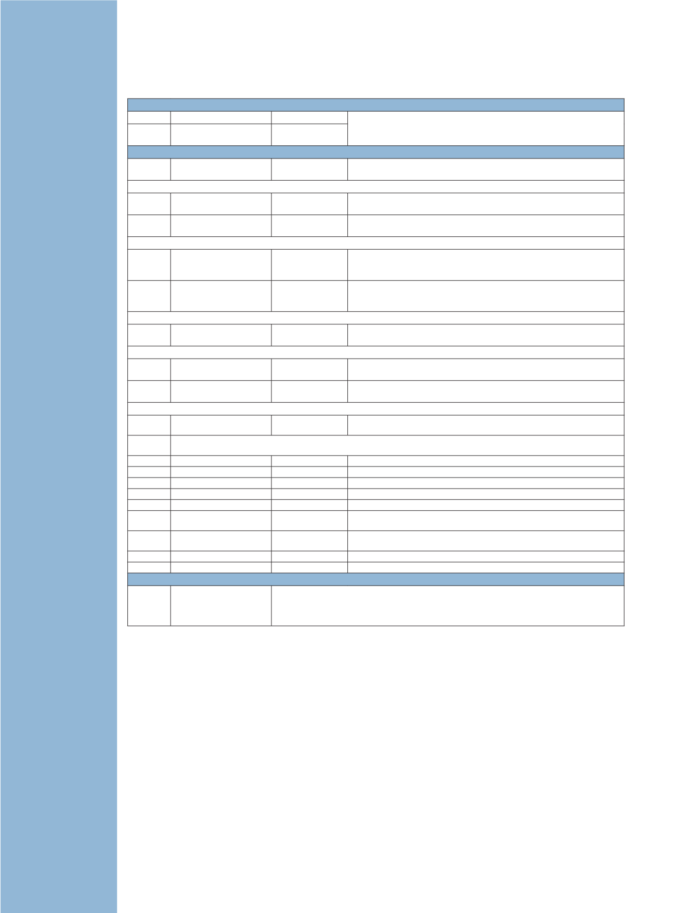

Thermometeranzeigen
Eigensichere Thermometer
1551A Ex 100 Ω, Dünnfilm-RTD
–50 °C bis 160 °C Genauigkeit ± 0,05 °C (± 0,09 °F) über den gesamten Bereich. Eigensicher
(erfüllt ATEX und IECEx) Zwei Modelle zur Auswahl (-50 °C bis 160 °C oder
-80 °C bis 300 °C)
1552A Ex 100 Ω, PRT,
drahtgewickelt
–80 °C bis 300 °C
Temperaturmessgeräte mit hoher Genauigkeit
Modell
Messfühlertypen
Genauigkeit bei
0 °C
Funktionen
Tweener
1502 A
PRTs
± 0,006 °C
Auflösung von 0,001 °C und hohe Genauigkeit; verwendet ITS-90-, IPTS-
68-, CVD- oder DIN- (IEC 751)-Linearisierungen
1504
Thermistoren
± 0,002 °C
Zeigt Messwerte von Thermistoren von 0 bis 500 kOhm an; verwendet
Steinhart-Hart- und CVD-Linearisierungen
Tragbar
1523
PRTs , Thermistoren,
Thermoelemente
± 0,002 °C
Batteriebetriebenes Handreferenzthermometer; INFO-CON-Anschluss liest
Koeffizienten ohne Programmierung; speichert bei Bedarf 25 Ablesewerte;
erstellt Trenddiagramme
1524
PRTs , Thermistoren,
Thermoelemente
± 0,002 °C
Handliches Referenzthermometer wie 1523, aber mit Eingängen für zwei
Temperaturfühler; protokolliert bis zu 15.000 Messwerte und speichert
weitere 25 bei Bedarf.
Chub-E4
1529
PRTs, Thermistoren,
Thermoelemente
± 0,006 °C (PRT)
Vier Kanäle können gleichzeitig gemessen werden; batteriebetrieben;
protokolliert bis zu 8.000 Messwerte; flexible Anzeige
Super-Thermometer
1594A
SPRTs, PRTs,
Thermistoren
± 0,00006 °C
Verhältnisgenauigkeit von 0,8 ppm; temperaturgeregelte interne
Referenzwiderstände; sechs Eingangskanäle
1595A
SPRTs, PRTs,
Thermistoren
± 0,000015 °C Verhältnisgenauigkeit von 0,2 ppm; Verhältnis-Selbstkalibrierung;
automatische Null-Energie-Messungen
Mehrkanal
1586A PRTs, Thermistoren,
Thermoelemente
± 0,005 °C
40 Kanäle mit Abtastrate von 10 Kanälen pro Sekunde
1560
Akzeptiert jede Kombinationen der unten angegebenen Module; alle lassen sich problemlos zur 1560-Basis hinzufügen
oder davon entfernen.
2560
SPRTs, PRTs
± 0,005 °C
2 Kanäle 25-Ohm- oder 100-Ohm-PRTs
2561
HTPRTs
± 0,013 °C
2 Kanäle bis 1200 °C
2562
PRTs
± 0,01 °C
8 Kanäle mit 2-, 3- oder 4-Leiter-RTDs
2563
Thermistoren
± 0,0013 °C
2 Kanäle zur Auflösung auf 0,0001 °C
2564
Thermistoren
± 0,0025 °C
8 Kanäle zur Datenerfassung.
2565
Thermoelemente
± 0,05 °C
Zeigt Messwerte der meisten Thermoelementtypen mit 0,0001 mV
Auflösung an
2566
Thermoelemente
± 0,1 °C
Zeigt jede Kombination von bis zu 12 Kanälen von praktisch jedem
Thermoelementtyp an.
2567
1000-Ω-PRTs
± 0,006 °C
2 Kanäle hochohmiger PRTs
2568
1000-Ω-PRTs
± 0,01 °C
8 Kanäle hochohmiger PRTs
Thermo-Hygrometer
1620A Thermo-Hygrometer
„DewK“
Zwei Kanäle zur Messung der Umgebungstemperatur auf ± 0,125 °C und der relativen Feuchte
(%) auf ± 1,5 % Der integrierte Speicher bewahrt Ablesewerte mit Zeit-/Datumsstempel bis zu
zwei Jahre auf. Visueller und akustischer Alarm. Abnehmbare Sensoren enthalten ihre eigenen
Kalibrierungsdaten für einfache Neukalibrierungen. Ethernet- und WLAN-Fähigkeiten.
14
Temperaturkalibrierung